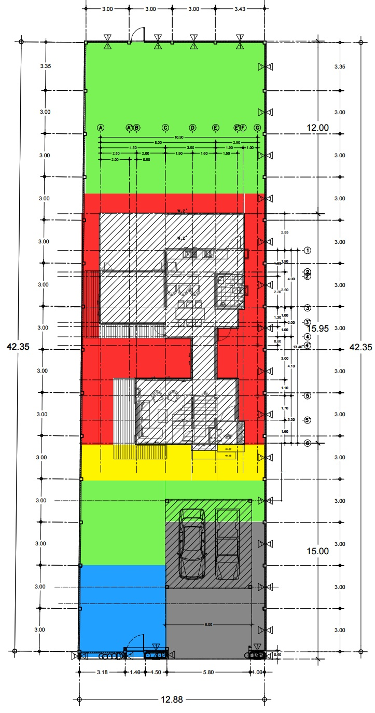
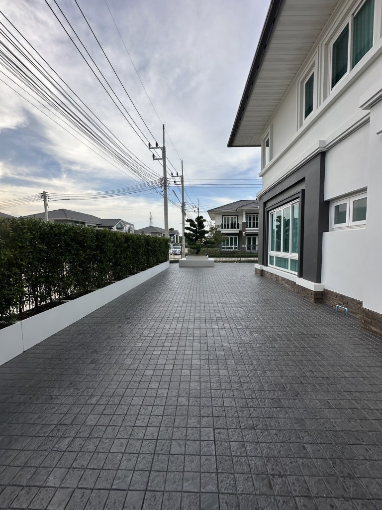

เปรียบเทียบ v2 vs ราคากลาง
ฐานพื้นที่ plan-2
บ้านสวนธรรมรัตน์ · 12/07/2569 · task 012-02
v2 รวมทั้งหมด
228,475
กลาง × จำนวน v2
146,610
ส่วนต่าง (กลาง×v2 qty)
+81,865
v2 สูงกว่า
+56%

1. ราคา/หน่วย v2 vs ราคากลาง
| รายการ | v2/หน่วย | กลางทั่วไป | ภาคใต้ | Δ กลาง | ประเมิน |
|---|---|---|---|---|---|
| หญ้านวลน้อย | 150 | 120 | 110 | +30 / +40 | สูงกว่ากลาง 25–36% — ยังอยู่ในช่วงตลาด 80–150 |
| หินเกล็ดดำ | 300 | 300 | 300 | 0 | สอดคล้องกลาง |
| ปูพื้นภายนอก | 1,500 | 750* | 700 | +750* | *กลางทั่วไป — ถ้า SCG UVT ติดตั้งครบ ดู §2b (สมเหตุสมผล) |
| คอนกรีต (15 cm + mesh) | 750 | 450* | 500* | +300 / +250 | *กลาง ~10 cm — ถ้าปรับ 15 cm ~675 ยังสูง ~11% |
| แผ่นทางเดินทรายล้าง | 250 | 180 | 180 | +70 | สูงกว่ากลาง ~39% |
| ซัมโน้นดำ | 250 | — | — | — | เทียบแผ่นทางเดิน — สมเหตุสมผลถ้ารวมวาง |
| ค่าบริการ | 6,000 | — | — | — | v1 ฟรี — ควรแจกแจง |
2. ราคากลาง × จำนวน v2 vs ยอด v2
| รายการ | v2 จำนวน | กลางรวม | ใต้รวม | v2 รวม | ส่วนต่าง | % |
|---|---|---|---|---|---|---|
| หญ้า | 197 | 23,640 | 21,670 | 29,550 | +5,910 | +25% |
| หิน | 111 | 33,300 | 33,300 | 33,300 | 0 | 0% |
| ปูพื้น | 34 | 25,500 | 23,800 | 51,000 | +25,500 | +100% |
| คอนกรีต | 129 | 58,050 | 64,500 | 96,750 | +38,700 | +67% |
| แผ่นทางเดิน | 34 | 6,120 | 6,120 | 8,500 | +2,380 | +39% |
| ซัมโน้นดำ | 13.5 | — | — | 3,375 | — | — |
| ค่าบริการ | 1 | — | — | 6,000 | — | — |
| รวม 5 รายการหลัก | 146,610 | 149,390 | 219,100 | +72,490 | +49% | |
| รวมทั้งหมด v2 | 228,475 | +81,865* | +56% | |||
*เทียบกับกลาง 146,610 + รายการใหม่ — ถ้านับเฉพาะ 5 รายการหลัก ส่วนต่าง +72,490
2b. ปูพื้น SCG — รูปงานติดตั้งจริง (อัปเดต 13/07/2569)

| เปรียบเทียบ | บาท/ตร.ม. | หมายเหตุ |
|---|---|---|
| ใบเสนอ v2 | 1,500 | 34 ตร.ม. = 51,000 |
| ราคากลางทั่วไป | 750 | ไม่ใช่สเปก SCG UVT |
| SCG UVT วัสดุอย่างเดียว | 640–850 | บ้านและสวน |
| SCG Home ติดตั้งครบ | 1,890 / 1,990 | scghome.com/promotions/pave — รวมแผ่น+รองทราย+เคลือบ |
สรุป: ถ้า 1,500 เป็น SCG UVT ติดตั้งครบชุด แบบรูป → ไม่แพง (ถูกกว่า SCG Home ~21%) · ประเด็นที่เหลือคือยืนยันรุ่นและ scope ไม่ใช่ต่อรองราคาปูพื้นหนัก
ข้อความถามผู้รับเหมา: contractor-message.md
3. ราคากลาง × พื้นที่ plan-2 (ฐานต่อรองหลัก)
| สี | รายการ | plan-2 | กลาง/ตร.ม. | กลางรวม | v2/ตร.ม. | v2×แผน | ส่วนต่าง |
|---|---|---|---|---|---|---|---|
| หญ้า | 177.3 | 120 | 21,276 | 150 | 26,595 | +5,319 | |
| หิน | 83.7 | 300 | 25,110 | 300 | 25,110 | 0 | |
| ปูพื้น | 38.6 | 750* | 28,950 | 1,500 | 57,900 | +28,950* | |
| คอนกรีต | 102.0 | 450 | 45,900 | 750 | 76,500 | +30,600 | |
| รวม 4 รายการ | 121,266 | 186,105 | +64,839 (+53%) | ||||
ฐานต่อรองที่แนะนำ: ใช้ 121,266 บาท (กลาง×plan-2 4 รายการ) + แผ่นทางเดิน 6,120 + ซัมโน้น (ถ้าจำเป็น) ≈ 127,000–130,000 บาท เป็นจุดเริ่มคุย — ไม่ใช่ 228,475
4. คอนกรีต 15 cm — ปรับ benchmark
| สมมติฐาน | อัตรา/ตร.ม. | 129 ตร.ม. (v2) | 102 ตร.ม. (แผน) | v2 จริง |
|---|---|---|---|---|
| กลาง 10 cm | 450 | 58,050 | 45,900 | 96,750 |
| ปรับ 15 cm (~1.5×) | 675 | 87,075 | 68,850 | |
| ภาคใต้ 10 cm | 500 | 64,500 | 51,000 |
แม้ปรับ 15 cm เป็น 675 บาท/ตร.ม. v2 ยังสูงกว่า ~11% บนพื้นที่ v2 — จุดต่อรองหลักย้ายไปที่ พื้นที่หิน/คอนกรีต/หญ้า และ มัดจำ (ปูพื้น SCG UVT 1,500 สมเหตุสมผลถ้ารวมติดตั้งครบ — §2b)
5. สรุปและคำแนะนำมัดจำ
อย่าจ่ายมัดจำ 100,000 บาท จนกว่าจะ: (1) overlay แผนกับจำนวนพื้นที่ v2 (2) ยืนยันรุ่น SCG + scope ปูพื้น (รูปงานจริง) (3) คอนกรีต 15 cm รวมอะไรบ้าง (4) แจกแจงค่าบริการ 6,000
- ดีขึ้นจาก v1: หญ้า 197 ตร.ม. ชัด · หน่วยหญ้า 150 · หินตรงกลาง · สเปกคอนกรีต · มีรูปงานปูพื้น SCG จริง
- ปูพื้น 1,500: สมเหตุสมผลถ้าเป็น SCG UVT ติดตั้งครบ (ต่ำกว่า SCG Home 1,890) — ขอยืนยันรุ่น/scope
- ยังควรคุย: พื้นที่หิน/คอนกรีต vs แผน · คอนกรีตเทียบกลาง 10 cm · ซัมโน้นดำ + ค่าบริการ 9,375
- มัดจำ: ขอแบ่งตาม milestone หรือลดให้สอดคล้อง % ที่ตกลงหลังปรับพื้นที่ตามแผน
เป้าหมายต่อรอง: ปรับพื้นที่ให้ใกล้ plan-2 แล้วใช้กลาง×แผน ~121,266 (+ แผ่นทางเดิน/ซัมโน้นตามจริง) แทน 228,475